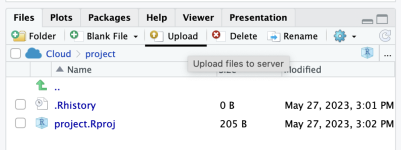

| Пункт | Англійською | Українською |
|---|---|---|
| MTAS1 | Before a test/ exam, I am worried I will fail. | Перед тесту/іспитом я хвилююсь, що не складу. |
| MTAS2 | I forget previously known material before taking a test/exam. | Я забуваю раніше знайомий матеріал перед складанням тесту/іспиту. |
| MTAS3 | Even when I have prepared for a test/ exam I feel nervous about it. | Навіть коли я готувався до тесту/іспиту, я нервую з цього приводу. |
| MTAS4 | Before I take a test/ exam my hand trembles. | Перед тестом/іспитом у мене тремтить рука. |
| MTAS5 | During a test/ exam, I worry that I gave the wrong answers. | Під час тесту/іспиту я переживаю, що дав неправильні відповіді. |
| MTAS6 | I forget facts I have learnt during tests/exams. | Я забуваю факти, які дізнався під час тестів/іспитів. |
| MTAS7 | I feel tense before taking a test/exam. | Я відчуваю напругу перед здачею тесту/іспиту. |
| MTAS8 | My heart races when I take a test/exam. | Моє серце прискорюється, коли я складаю тест/іспит. |
| MTAS9 | After a test/exam, I am worried I have failed. | Після тесту/іспиту я хвилююся, що не склав. |
| MTAS10 | During tests/exams, I forget things that I have learnt. | Під час тестів/іспитів я забуваю речі, які вивчав. |
| MTAS11 | Just before I take a test/exam, I feel panicky. | Безпосередньо перед складанням тесту/іспиту я відчуваю паніку. |
| MTAS12 | During a test/ exam I experience stomach discomfort. | Під час тесту/іспиту я відчуваю дискомфорт у шлунку. |
| MTAS13 | During tests/ exams, I worry about the consequences of failing. | Під час тестів/іспитів я переживаю про наслідки невдачі. |
| MTAS14 | During tests/exams, I find it hard to concentrate. | Під час тестів/іспитів мені важко зосередитися. |
| MTAS15 | Before a test/exam, I feel nervous. | Перед тестом/іспитом я нервую. |
| MTAS16 | During a test/ exam, my muscles are tight. | Під час тесту/іспиту мої м’язи напружені. |
Дослідження взаємозвʼязку між шкільним благополуччям та тестовою/екзаменаційною тривогою
Примітка
Ксенії Олександрівні вдалося знайти дуже цікавий масив даних, на якому вона продемонструвала знання і навички, здобуті в процесі вивчення курсу «Дизайн психологічного дослідження з елементами математичної статистики». Я вирішив використати її звіт як приклад хорошої роботи, додавши свої коментарі
Вступ
Електронний ресурс: Mendeley Data
Дослідження: Test Anxiety, Wellbeing, Generalised Anxiety, Panic
Ідентифікатор: DOI: 10.17632/9dcs5nvwtw.1
Режим доступу: https://data.mendeley.com/datasets/9dcs5nvwtw
Гіпотеза: Існує негативна кореляція між рівнем благополуччя у школі та тривогою під час тестування у підлітків.
У цьому дослідженні я використовувала набір даних “Test Anxiety, Wellbeing, Generalised Anxiety, Panic”, опублікований на ресурсі Mendeley Data, щоб дослідити зв’язок між тривогою під час тестування та благополуччям у школі у підлітків. Набір даних містить інформацію про 918 учасників віком від 13 до 19 років з 8 загальноосвітніх шкіл та коледжів у Англії та Уельсі. У дослідженні вимірювали три конструкти: тривога під час тестування, благополуччя у школі та генералізовану тривогу та паніку. Тривога під час тестування була виміряна за допомогою багатовимірної шкали тривоги під час тестування (Putwain et al., 2020), а благополуччя, пов’язане зі школою, було виміряно за допомогою шкали благополуччя у школі (Loderer et al., 2016). Додатково, загальна тривога та паніка були виміряні за допомогою підшкал зміненої шкали тривоги та депресії у дітей (Chorpita et al., 2005).
Моя гіпотеза полягає у тому, що існує негативна кореляція між рівнем благополуччя у школі та тривогою під час тестування у підлітків. Для підтвердження чи спростування цієї гіпотези, я буду аналізувати дані, отримані за допомогою шкал тривоги під час тестування та благополуччя у школі.
Багатовимірна шкала тестової тривожності (The Multidimensional Test Anxiety Scale - MTAS) була розроблена як інструмент для вимірювання тестової тривоги або екзаменаційної тривожності у популяції учнів середньої школи. У дослідженні респондентам були надані такі питання (Табл. 1):
Шкала благополуччя, пов’язаного зі школою (School-Related Wellbeing Scale), є інструментом, який використовується для вимірювання рівня благополуччя учнів у шкільному середовищі. Ця шкала спроектована для оцінки психологічного, емоційного та соціального добробуту учнів, а також їх задоволення шкільним життям. У дослідженні респондентам були надані такі питання (Табл. 2):
| Пункт | Англійською | Українською |
|---|---|---|
| WELL1 | School is going well for me. | У мене все йде добре в школі. |
| WELL2 | I feel better at school then my classmates. | У школі я почуваюся краще, ніж мої однокласники. |
| WELL3 | I feel good at school. | Мені добре в школі. |
| WELL4 | School allows me fulfil me needs. | Школа дозволяє мені задовольняти потреби. |
| WELL5 | I feel comfortable at school. | Мені комфортно в школі. |
| WELL6 | I like going to school. | Мені подобається ходити до школи. |
| WELL7 | All in all, I am content with my day-to-day school experiences. | В цілому, я задоволений своїм повсякденним шкільним досвідом. |
Хід роботи
Підготовчий етап
Примітка
Детальний покроковий опис виконаних дій насправді є необов’язковим і навіть шкодить роботі, оскільки потребує значно більше часу для створення звіту і відволікає від вирішення значно важливішої задачі – аналізу даних. Проте я лишив в прикладі цю частину, тому що вона може виявитися корисною для тих студентів, які мають обмежений досвід.
Крок 1. Початок роботи з R-Studio. Відкриваю хмарну версію R Studio https://posit.cloud/. Для роботи у хмарній версії має бути власний обліковий запис, який був створений мною на початку семестру. Заходжу у нього.
Крок 2. Створюю новий проєкт натискаючи відповідну кнопку (Рис. 1).

Крок 3. У вкладці Files натискаю кнопку Upload для завантаження датасету, обираю файл на компʼютері, який має назву «Test Anxiety, Wellbeing, Generalised Anxiety and Panic.sav» (Рис. 2).

Крок 4. Відкриваю додаткове вікно для введення тексту, майбутнього скрипту. Натискаю на вкладку File, де обираю New File -> R Script Рис. 3).
Крок 5. Так як файл з датасетом в форматі *sav , потрібно завантажити пакет haven. Щоб завантажити пакет натискаю кнопку tools , обираю Instal packages (рис. 4), та у вікні прописую haven, натискаю instal . Підключаю його у вкладці Packages.
Крок 6. Далі у вкладці Environment натискаю Import Dataset, та обираю «From SPSS» (рис. 5). R Studio пропонує оновити пакет Rcpp, я погоджуюсь, щоб продовжити роботу. Відкривається потрібне мені вікно, обираю датасет та натискаю Import.
Крок 7. Cтворюю собі новий датасет з таким самим набором даних, для того щоб його змінювати, додавати в нього нові змінні, даю йому назву mydataset.
library(haven)
mydataset <- read_spss(
"Test Anxiety, Wellbeing, Generalised Anxiety and Panic.sav"
)Обчислення змінних
Крок 8. Далі я маю отримати середній бал відповідей (оцінку) кожної людини по шкалам які ми будемо досліджувати, а саме WELL і MTAS. Для цього за допомогою команди transform я формую дві нові змінні, які обчислюються шляхом сумування відповідних питань шкал MTAS і WELL. Так як у датасеті варіативність відповідей у шкалах від 1 до 5 , а мені потрібно від 0, то у формулі середнього арифметичного, після знаходження суми відповідей, потрібно відняти кількість питань і отримане значення поділити на кількість питань.
mydataset <- transform(
mydataset,
MTAS = (MTAS1 + MTAS2 + MTAS3 + MTAS4 + MTAS5 + MTAS6 + MTAS7 +
MTAS8 + MTAS9 + MTAS10 + MTAS11 + MTAS12 + MTAS13 +
MTAS14 + MTAS15 + MTAS16 - 16) / 16,
WELL = (WELL1 + WELL2 + WELL3 + WELL4 +
WELL5 + WELL6 + WELL7 - 7) / 7
)Крок 9. Для візуалізації попередньої дії, я зроблю гістограми розподілу по двом досліджуваним змінним (рис. 6). Це дозволить візуально оцінити розподіл оцінок для кожної шкали.
hist(
mydataset$MTAS,
col = "blue", breaks = 10,
xlab = "оцінка",
ylab = "кількість опитаних"
)hist(
mydataset$WELL, col = "blue",
breaks = 10,
xlab = "оцінка",
ylab = "кількість опитаних"
)Вивчення зв’язку
Крок 10. Тепер побудую діаграму розсіювання, де змінна MTAS представлена на осі Y, а змінна WELL - на осі X (рис. 7), щоб потім на ній зобразити лінію регресії.
plot(
MTAS ~ WELL, data = mydataset,
pch = 16
)Крок 11. Будую лінійну регресійну модель, щоб оцінити взаємозв’язок між оцінками MTAS і WELL та побачити наявність та тип кореляції між ними за допомогою функції lm.
Крок 12. Малюю лінію регресії для візуалізації створеної моделі за допомогою команди abline. Після реалізації цього кроку, на діаграмі розсіювання зʼявилась лінія, яка вказує на те, що зі зниженням показника WELL , показник MTAS підвищується (рис 8).
model1 <- lm(
formula = MTAS ~ WELL,
data = mydataset
)
plot(
MTAS ~ WELL, data = mydataset,
pch = 16
)
abline(model1, lwd = 2, col = "blue")Крок 13. Вивожу інформацію регресійної моделі на консоль щоб побачити рівень кореляції та тип кореляції ( негативну/позитивну) , визначити чи результати побудованої моделі є статистично значущими та побачити відсоток дисперсії, яка може бути поясненою моделлю.
summary(model1)
Call:
lm(formula = MTAS ~ WELL, data = mydataset)
Residuals:
Min 1Q Median 3Q Max
-3.08867 -0.39830 0.08379 0.51538 1.99443
Coefficients:
Estimate Std. Error t value Pr(>|t|)
(Intercept) 3.08867 0.07998 38.62 < 2e-16 ***
WELL -0.27078 0.03310 -8.18 9.43e-16 ***
---
Signif. codes: 0 '***' 0.001 '**' 0.01 '*' 0.05 '.' 0.1 ' ' 1
Residual standard error: 0.7368 on 916 degrees of freedom
Multiple R-squared: 0.06808, Adjusted R-squared: 0.06706
F-statistic: 66.91 on 1 and 916 DF, p-value: 9.427e-16Висновок: WELL негативно корелює з MTAS (-0.2708), тобто коли значення WELL зменшується на одиницю, очікується збільшення MTAS на 0.2708. Значення Pr(>|t|) є дуже малим, це означає, що змінна WELL статистично значимо впливає на змінну MTAS, тобто існує статистично значуща залежність між благополуччям у школі та тестовою тривожністю. Значення Multiple R-squared означає що приблизно 6.8% відхилення людей в сукупності від середнього значення моя модель може пояснити.
Додаткові предиктори
Підказка
Масив даних містить декілька соціально-демографічних змінних, які можуть виявитися корисними для пояснення тривоги: школа, стать, вік, етнічна належніть, право на безплатні сніданки (тобто, фінансовий стан сім’ї учня). Перед включенням змінної до моделі корисно дослідити розподіл її значень. Наприклад, подивимося на розподул за статтю:
library(sjmisc)
frq(mydataset, Gender)What is your gender? (Gender) <numeric>
# total N=918 valid N=918 mean=0.77 sd=0.44
Value | Label | N | Raw % | Valid % | Cum. %
----------------------------------------------------------
0 | Male | 217 | 23.64 | 23.64 | 23.64
1 | Female | 694 | 75.60 | 75.60 | 99.24
2 | Prefer not to say | 7 | 0.76 | 0.76 | 100.00
<NA> | <NA> | 0 | 0.00 | <NA> | <NA>Як можемо бачити, змінна Gender має додаткове значення 2, яке фактично вказує про відсутність даних. Отже, перед використанням цієї змінної в моделі потрібно її перекодувати, позбувшись тих семи учасників дослідження, які не надали відповіді на питання про стать.
Крок 14. Додатково розгляну вплив статі, щоб врахувати можливий вплив різниці у гендері на рівень тестової тривожності, оцінити чи є це статистично значущим предиктором, та покращити пояснювальну здатність моделі. Додаю до датасету додаткову змінну, яку називаю Female, тепер цей стовпчик відповідає на питання «Жінка?». Якщо значення 0, то ні (чоловік), якщо значення 1, то так (жінка).
library(car)Loading required package: carDatamydataset <- transform(
mydataset,
Female = recode(Gender, recodes = "0 = 0; 1 = 1; 2 = NA")
)Крок 15. Створюю нову модель впливу фактору гендеру на MTAS, яка має оцінити, як стать (жінка або чоловік) впливає на рівень тривожності. Крок 16. Вивожу статистичний опис model2 на консоль
model2 <- lm(MTAS ~ Female, data = mydataset)
summary(model2)
Call:
lm(formula = MTAS ~ Female, data = mydataset)
Residuals:
Min 1Q Median 3Q Max
-2.60222 -0.44787 0.05213 0.52278 1.55213
Coefficients:
Estimate Std. Error t value Pr(>|t|)
(Intercept) 2.01037 0.04895 41.07 <2e-16 ***
Female 0.59185 0.05608 10.55 <2e-16 ***
---
Signif. codes: 0 '***' 0.001 '**' 0.01 '*' 0.05 '.' 0.1 ' ' 1
Residual standard error: 0.721 on 909 degrees of freedom
(7 observations deleted due to missingness)
Multiple R-squared: 0.1092, Adjusted R-squared: 0.1082
F-statistic: 111.4 on 1 and 909 DF, p-value: < 2.2e-16Висновок: Отримані результати вказують на те, що середній рівень тестової тривожності для чоловіків (female = 0) становить 2.01594. А серед жінок (female = 1) очікуваний рівень тривожності вищий на 0.58280 порівняно з чоловіками. Тобто 2.01594 + 0.58280*1= 2.59874 - очікувана оцінка по шкалі MTAS для жінок. Тож, можна зробити висновок що для жінок очікується вищій рівень тестової тривожності, значення Pr(>|t|) підтверджує високий рівень статистичної значущості, також модель може пояснити 11% дисперсії залежної змінної, що вказує на те що модель є середньою.
Крок 17. Будую складну модель, де зазначаю вплив WELL + Female на MTAS, щоб дослідити, як благополуччя у школі та стать впливають на рівень тривожності, а також можливу взаємодію між ними. Крок 18. Вивожу статистичний опис model3 на консоль
model3 <- lm(MTAS ~ WELL + Female, data = mydataset)
summary(model3)
Call:
lm(formula = MTAS ~ WELL + Female, data = mydataset)
Residuals:
Min 1Q Median 3Q Max
-2.96261 -0.39896 0.04706 0.49185 1.83129
Coefficients:
Estimate Std. Error t value Pr(>|t|)
(Intercept) 2.60986 0.08874 29.409 < 2e-16 ***
WELL -0.25260 0.03163 -7.987 4.18e-15 ***
Female 0.56926 0.05431 10.481 < 2e-16 ***
---
Signif. codes: 0 '***' 0.001 '**' 0.01 '*' 0.05 '.' 0.1 ' ' 1
Residual standard error: 0.6974 on 908 degrees of freedom
(7 observations deleted due to missingness)
Multiple R-squared: 0.1676, Adjusted R-squared: 0.1658
F-statistic: 91.43 on 2 and 908 DF, p-value: < 2.2e-16Висновок: Додавання предиктору Female збільшило відсоток дисперсії, яка може пояснити вплив WELL на MTAS до значення 16,9 %. При цьому коефіцієнт WELL не змінився значною мірою. Обидві змінні WELL та Female мають статистично значущий вплив на тривожність.
Нелінійний зв’язок
Крок 19. Будую нову модель, для вивчення можливих нелінійних залежностей між незалежною змінною WELL і залежною змінною MTAS, в якій вказую кореляційний звʼязок MTAS та WELL^2, тобто квадратичний звʼязок. Крок 20. Виводжу інформацію про модель на консоль.
model4 <- lm(
formula = MTAS ~ WELL + I(WELL ^ 2) + I(WELL ^ 3),
data = mydataset
)
summary(model4)
Call:
lm(formula = MTAS ~ WELL + I(WELL^2) + I(WELL^3), data = mydataset)
Residuals:
Min 1Q Median 3Q Max
-2.85370 -0.40531 0.08901 0.50578 1.85372
Coefficients:
Estimate Std. Error t value Pr(>|t|)
(Intercept) 2.64204 0.20165 13.102 <2e-16 ***
WELL 0.55413 0.34370 1.612 0.1073
I(WELL^2) -0.40991 0.17998 -2.278 0.0230 *
I(WELL^3) 0.06010 0.02883 2.084 0.0374 *
---
Signif. codes: 0 '***' 0.001 '**' 0.01 '*' 0.05 '.' 0.1 ' ' 1
Residual standard error: 0.7353 on 914 degrees of freedom
Multiple R-squared: 0.07409, Adjusted R-squared: 0.07105
F-statistic: 24.38 on 3 and 914 DF, p-value: 3.51e-15Результати побудованої моделі показують, що після додавання квадрату WELL статистична значущість впливу цього предиктору впала , квадрат WELL також не виявляє достатньої статистичної значущості. При цьому статистична значущість моделі в цілому залишається на високому рівні p-value: 4.438e-15. Відсоток дисперсії яку може пояснити модель майже не змінився, в порівнянні з model 1, і становить 7%. Таке падіння значущості впливу предиктору було зумовлено штучною мультиколінеарністю предикторів.
Крок 21. Щоб уникнути проблеми мультиколінеарності між предикторами, потрібно зменшити цю кореляцію, шляхом “відцентрування” цільового предиктора. Для відцентрування предиктора WELL використовуємо обчислення за допомогою команди transform. Спочатку роблю змінну WELL_cent = WELL - середній.бал(WELL), а потім роблю ще одну змінну WELL_cent2, де підношу WELL_cent до квадрату
mydataset <- transform(
mydataset,
WELL_cent = WELL - mean(WELL)
)
mydataset <- transform(
mydataset,
WELL_cent2 = WELL_cent ^ 2
)Крок 22. Ще раз будую нову модель model4_1, для вивчення можливих нелінійних залежностей між незалежною змінною WELL і залежною змінною MTAS, використовуючи центрований предиктор. Крок 23. Виводжу на консоль інформацію про нову model4_1.
model4_1 <- lm(
formula = MTAS ~ WELL_cent + WELL_cent2,
data = mydataset
)
summary(model4_1)
Call:
lm(formula = MTAS ~ WELL_cent + WELL_cent2, data = mydataset)
Residuals:
Min 1Q Median 3Q Max
-2.9404 -0.4077 0.0770 0.5075 2.1247
Coefficients:
Estimate Std. Error t value Pr(>|t|)
(Intercept) 2.48751 0.02998 82.983 < 2e-16 ***
WELL_cent -0.29096 0.03677 -7.914 7.2e-15 ***
WELL_cent2 -0.04093 0.03249 -1.260 0.208
---
Signif. codes: 0 '***' 0.001 '**' 0.01 '*' 0.05 '.' 0.1 ' ' 1
Residual standard error: 0.7366 on 915 degrees of freedom
Multiple R-squared: 0.06969, Adjusted R-squared: 0.06766
F-statistic: 34.27 on 2 and 915 DF, p-value: 4.438e-15Висновок: центрування предиктора WELL дозволило знайти статистично значущий зв’язок між WELL_cent і MTAS, але WELL_cent2 не показав статистично значущих результатів. Тобто немає достовірного доказу нелінійного компонента в залежності між рівнем благополуччя та тривожністю, але є статистично незначуща тенденція.
Взаємодія предикторів
Крок 24. Розгляну взаємодію (статистичну інтеракцію) двох предикторів (WELL та Gender) у їхньому взаємному впливі на залежну змінну. Ціль цього процесу є більш детальне дослідження взаємодії двох предикторів, та їх вплив на залежну змінну.
Для цього спочатку перетворюю кількісну змінну Gender на фактор Гендер.
Крок 25. Будую модель, в якій вказую вплив WELL та Gender та їхню інтеракцію на MTAS, та вивожу результат.
model5 <- lm(
MTAS ~ WELL * Female,
data = mydataset
)
summary(model5)
Call:
lm(formula = MTAS ~ WELL * Female, data = mydataset)
Residuals:
Min 1Q Median 3Q Max
-2.9575 -0.3970 0.0492 0.4922 1.8252
Coefficients:
Estimate Std. Error t value Pr(>|t|)
(Intercept) 2.64334 0.17355 15.231 < 2e-16 ***
WELL -0.26671 0.07035 -3.791 0.00016 ***
Female 0.52761 0.19331 2.729 0.00647 **
WELL:Female 0.01769 0.07877 0.225 0.82241
---
Signif. codes: 0 '***' 0.001 '**' 0.01 '*' 0.05 '.' 0.1 ' ' 1
Residual standard error: 0.6977 on 907 degrees of freedom
(7 observations deleted due to missingness)
Multiple R-squared: 0.1677, Adjusted R-squared: 0.1649
F-statistic: 60.91 on 3 and 907 DF, p-value: < 2.2e-16Висновок: В отриманих результатах можна побачити, що предиктор WELL має статистично значущий вплив і показує негативну кореляцію з залежною змінною MTAS . Розглядаючи значення Гендер1 (чоловік) та Гендер 2 ( жінка), можна побачити, що більшу позитивну кореляцію показує жіноча стать, але цей предиктор не має достатньої статистичної значущості, на відміну від Гендер 1 який має статистичну значущість 0.006382 **. На жаль, у даній моделі статистично значущої інтеракції між предикторами не було виявлено.
Кофірматорний ФА
Крок 27. Початок конфірматорного аналізу для двох конструктів WELL та MTAS. Це допоможе дізнатись про якість проведення дослідження та можливі коварації між змінними(питаннями) в конструкті. Для початку роботи завантажую та підключаю пакет lavaan через кнопку tools.
Крок 28. Створюю структурну модель WELL. В структурній моделі зазначаю фактор та змінні якими він пояснюється.
model6f <- "factorWELL =~ WELL1 + WELL2 + WELL3 + WELL4 + WELL5 + WELL6 + WELL7"Крок 29. Провожу конфірматорний факторний аналіз для цієї структурної моделі. Крок 30. Вивожу головні результати моделі на консоль. При цьому розширяю виведену інформацію включивши в неї fit.measures = TRUE - додасть оцінки якості моделі, rsq = TRUE - значення Rквадрат.
library(lavaan)This is lavaan 0.6-15
lavaan is FREE software! Please report any bugs.fitWELL <- cfa(
model = model6f, data = mydataset,
estimator = "ML"
)
summary(
fitWELL, fit.measures = TRUE,
rsq = TRUE
)lavaan 0.6.15 ended normally after 24 iterations
Estimator ML
Optimization method NLMINB
Number of model parameters 14
Number of observations 918
Model Test User Model:
Test statistic 156.189
Degrees of freedom 14
P-value (Chi-square) 0.000
Model Test Baseline Model:
Test statistic 3139.777
Degrees of freedom 21
P-value 0.000
User Model versus Baseline Model:
Comparative Fit Index (CFI) 0.954
Tucker-Lewis Index (TLI) 0.932
Loglikelihood and Information Criteria:
Loglikelihood user model (H0) -7323.420
Loglikelihood unrestricted model (H1) NA
Akaike (AIC) 14674.840
Bayesian (BIC) 14742.350
Sample-size adjusted Bayesian (SABIC) 14697.888
Root Mean Square Error of Approximation:
RMSEA 0.105
90 Percent confidence interval - lower 0.091
90 Percent confidence interval - upper 0.120
P-value H_0: RMSEA <= 0.050 0.000
P-value H_0: RMSEA >= 0.080 0.998
Standardized Root Mean Square Residual:
SRMR 0.043
Parameter Estimates:
Standard errors Standard
Information Expected
Information saturated (h1) model Structured
Latent Variables:
Estimate Std.Err z-value P(>|z|)
factorWELL =~
WELL1 1.000
WELL2 0.784 0.050 15.745 0.000
WELL3 1.322 0.056 23.752 0.000
WELL4 0.878 0.047 18.500 0.000
WELL5 1.076 0.051 21.107 0.000
WELL6 1.275 0.063 20.157 0.000
WELL7 1.078 0.049 21.828 0.000
Variances:
Estimate Std.Err z-value P(>|z|)
.WELL1 0.460 0.024 19.265 0.000
.WELL2 0.585 0.029 20.389 0.000
.WELL3 0.239 0.017 14.078 0.000
.WELL4 0.429 0.022 19.642 0.000
.WELL5 0.363 0.020 18.229 0.000
.WELL6 0.636 0.034 18.877 0.000
.WELL7 0.303 0.017 17.562 0.000
factorWELL 0.428 0.037 11.578 0.000
R-Square:
Estimate
WELL1 0.482
WELL2 0.310
WELL3 0.758
WELL4 0.435
WELL5 0.577
WELL6 0.522
WELL7 0.621Висновки: Для оцінки якості моделі буду використовувати показники: P-value (Chi-square) 0.000, Comparative Fit Index (CFI) 0.954, Tucker-Lewis Index (TLI) 0.932, RMSEA 0.105. Показник P-value (Chi-square) вказує те, наскільки модель відтворює вимірювані дані, у моєму випадку значення нижче 0.1% що вказує на те що модель поганої якості. CFI і TLI показники за загальноприйнятою мірою мають бути вищими за 0,95. У моєму випадку CFI є вищим за 0.95, а TLI майже наблизився до цільового значення. Це вказує на те, що все ж таки якість моделі не зовсім погана. Показник RMSEA має бути менше ніж 0.05 і по цьому параметру наша модель є також поганою.
Крок 31. Спробую покращити модель включивши в неї значущі коваріації. Спочатку знайду значущі коваріації за допомогою команди modindices(fitWELL).
modindices(fitWELL, sort. = TRUE, minimum.value = 50) lhs op rhs mi epc sepc.lv sepc.all sepc.nox
16 WELL1 ~~ WELL2 64.91 0.151 0.151 0.29 0.29Висновок: Для підвищення якості моделі можемо включити коваріації з найбільшим показником mi: WELL1 ~~ WELL2; WELL1 ~~ WELL6; WELL3 ~~ WELL7; WELL2 ~~ WELL4; WELL2 ~~ WELL6.
Крок 32. Роблю нову модель з доданими обраними ковараціями до минулої структурної моделі. Крок 33. Проводжу конфірматорний аналіз для нової структурної моделі з коваріаціями. Крок 34. Виводжу головні результати моделі на консоль
model6fков <-
"factorWELL =~ WELL1 + WELL2 + WELL3 + WELL4 + WELL5 + WELL6 + WELL7
WELL1 ~~ WELL2
WELL1 ~~ WELL6
WELL3 ~~ WELL7
WELL2 ~~ WELL4
WELL2 ~~ WELL6"
fitWELLков <- cfa(
model = model6fков, data = mydataset,
estimator = "ML"
)
summary(
fitWELLков, fit.measures = TRUE,
rsq = TRUE
)lavaan 0.6.15 ended normally after 28 iterations
Estimator ML
Optimization method NLMINB
Number of model parameters 19
Number of observations 918
Model Test User Model:
Test statistic 27.261
Degrees of freedom 9
P-value (Chi-square) 0.001
Model Test Baseline Model:
Test statistic 3139.777
Degrees of freedom 21
P-value 0.000
User Model versus Baseline Model:
Comparative Fit Index (CFI) 0.994
Tucker-Lewis Index (TLI) 0.986
Loglikelihood and Information Criteria:
Loglikelihood user model (H0) -7258.956
Loglikelihood unrestricted model (H1) NA
Akaike (AIC) 14555.912
Bayesian (BIC) 14647.534
Sample-size adjusted Bayesian (SABIC) 14587.192
Root Mean Square Error of Approximation:
RMSEA 0.047
90 Percent confidence interval - lower 0.027
90 Percent confidence interval - upper 0.068
P-value H_0: RMSEA <= 0.050 0.559
P-value H_0: RMSEA >= 0.080 0.003
Standardized Root Mean Square Residual:
SRMR 0.017
Parameter Estimates:
Standard errors Standard
Information Expected
Information saturated (h1) model Structured
Latent Variables:
Estimate Std.Err z-value P(>|z|)
factorWELL =~
WELL1 1.000
WELL2 0.782 0.044 17.803 0.000
WELL3 1.369 0.059 23.109 0.000
WELL4 0.881 0.048 18.409 0.000
WELL5 1.073 0.051 20.855 0.000
WELL6 1.309 0.069 19.099 0.000
WELL7 1.135 0.053 21.458 0.000
Covariances:
Estimate Std.Err z-value P(>|z|)
.WELL1 ~~
.WELL2 0.133 0.020 6.676 0.000
.WELL6 -0.085 0.021 -4.127 0.000
.WELL3 ~~
.WELL7 -0.069 0.014 -5.001 0.000
.WELL2 ~~
.WELL4 -0.046 0.017 -2.676 0.007
.WELL6 -0.075 0.022 -3.355 0.001
Variances:
Estimate Std.Err z-value P(>|z|)
.WELL1 0.470 0.024 19.343 0.000
.WELL2 0.591 0.029 20.353 0.000
.WELL3 0.203 0.019 10.946 0.000
.WELL4 0.435 0.022 20.026 0.000
.WELL5 0.378 0.020 18.982 0.000
.WELL6 0.615 0.033 18.650 0.000
.WELL7 0.262 0.018 14.446 0.000
factorWELL 0.418 0.037 11.388 0.000
R-Square:
Estimate
WELL1 0.470
WELL2 0.302
WELL3 0.794
WELL4 0.427
WELL5 0.560
WELL6 0.538
WELL7 0.672Висновки: Можна побачити що, показники якості моделі збільшились і тепер P-value (Chi-square) = 0.001, що вказує на те, що модель може відтворити 0.1% спостережуваних змінних, що залишається не дуже гарним результатом. Але показники CFI = 0.994, та TLI = 0.986 піднялися та перевищують 0.95, це вказує на гарний результат покращення моделі. RMSEA = 0.047 також нижче за цільове значення. Отже, можна вважати, що модель добре підігнана до спостережуваних змінних.
Крок 35. Конфірматорний аналіз для конструкта MTAS. Всі кроки описані вище будуть повторені для конструкта MTAS, і будуть описані основні дані з результатів.
model6fмтас <- "factorMTAS =~ MTAS1 + MTAS2 + MTAS3 + MTAS4 + MTAS5 + MTAS6 +
MTAS7 + MTAS8 + MTAS9 + MTAS10 + MTAS11 + MTAS12 + MTAS13 + MTAS14 + MTAS15 +
MTAS16"
fitMTAS <- cfa(
model = model6fмтас, data = mydataset,
estimator = "ML"
)
summary(
fitMTAS, fit.measures = TRUE,
rsq = TRUE
)lavaan 0.6.15 ended normally after 26 iterations
Estimator ML
Optimization method NLMINB
Number of model parameters 32
Number of observations 918
Model Test User Model:
Test statistic 1759.369
Degrees of freedom 104
P-value (Chi-square) 0.000
Model Test Baseline Model:
Test statistic 8582.854
Degrees of freedom 120
P-value 0.000
User Model versus Baseline Model:
Comparative Fit Index (CFI) 0.804
Tucker-Lewis Index (TLI) 0.774
Loglikelihood and Information Criteria:
Loglikelihood user model (H0) -18722.900
Loglikelihood unrestricted model (H1) NA
Akaike (AIC) 37509.801
Bayesian (BIC) 37664.111
Sample-size adjusted Bayesian (SABIC) 37562.483
Root Mean Square Error of Approximation:
RMSEA 0.132
90 Percent confidence interval - lower 0.126
90 Percent confidence interval - upper 0.137
P-value H_0: RMSEA <= 0.050 0.000
P-value H_0: RMSEA >= 0.080 1.000
Standardized Root Mean Square Residual:
SRMR 0.084
Parameter Estimates:
Standard errors Standard
Information Expected
Information saturated (h1) model Structured
Latent Variables:
Estimate Std.Err z-value P(>|z|)
factorMTAS =~
MTAS1 1.000
MTAS2 0.623 0.046 13.460 0.000
MTAS3 0.992 0.045 22.122 0.000
MTAS4 1.184 0.059 20.237 0.000
MTAS5 0.956 0.045 21.268 0.000
MTAS6 0.754 0.047 16.094 0.000
MTAS7 1.140 0.050 22.714 0.000
MTAS8 1.305 0.056 23.211 0.000
MTAS9 1.111 0.049 22.905 0.000
MTAS10 0.739 0.048 15.506 0.000
MTAS11 1.347 0.053 25.183 0.000
MTAS12 1.167 0.060 19.527 0.000
MTAS13 1.076 0.055 19.619 0.000
MTAS14 0.834 0.061 13.688 0.000
MTAS15 1.080 0.046 23.445 0.000
MTAS16 1.045 0.054 19.372 0.000
Variances:
Estimate Std.Err z-value P(>|z|)
.MTAS1 0.447 0.023 19.827 0.000
.MTAS2 0.764 0.036 21.062 0.000
.MTAS3 0.434 0.022 19.803 0.000
.MTAS4 0.864 0.043 20.265 0.000
.MTAS5 0.470 0.023 20.036 0.000
.MTAS6 0.705 0.034 20.849 0.000
.MTAS7 0.513 0.026 19.612 0.000
.MTAS8 0.609 0.031 19.428 0.000
.MTAS9 0.469 0.024 19.544 0.000
.MTAS10 0.748 0.036 20.904 0.000
.MTAS11 0.426 0.023 18.377 0.000
.MTAS12 0.946 0.046 20.398 0.000
.MTAS13 0.792 0.039 20.382 0.000
.MTAS14 1.313 0.062 21.047 0.000
.MTAS15 0.398 0.021 19.333 0.000
.MTAS16 0.779 0.038 20.425 0.000
factorMTAS 0.509 0.040 12.615 0.000
R-Square:
Estimate
MTAS1 0.533
MTAS2 0.206
MTAS3 0.536
MTAS4 0.453
MTAS5 0.498
MTAS6 0.291
MTAS7 0.564
MTAS8 0.587
MTAS9 0.573
MTAS10 0.271
MTAS11 0.684
MTAS12 0.423
MTAS13 0.427
MTAS14 0.213
MTAS15 0.598
MTAS16 0.417modindices(
fitMTAS, sort. = TRUE,
minimum.value = 50
) lhs op rhs mi epc sepc.lv sepc.all sepc.nox
102 MTAS6 ~~ MTAS10 415.824 0.502 0.502 0.691 0.691
56 MTAS2 ~~ MTAS10 245.635 0.400 0.400 0.529 0.529
52 MTAS2 ~~ MTAS6 230.451 0.376 0.376 0.513 0.513
147 MTAS12 ~~ MTAS16 88.669 0.281 0.281 0.327 0.327
41 MTAS1 ~~ MTAS9 79.507 0.148 0.148 0.324 0.324
116 MTAS7 ~~ MTAS15 70.391 0.140 0.140 0.309 0.309
79 MTAS4 ~~ MTAS8 52.472 0.189 0.189 0.261 0.261
136 MTAS10 ~~ MTAS14 50.892 0.239 0.239 0.241 0.241model6fмтаск <-
"factorMTAS =~ MTAS1 + MTAS2 + MTAS3 + MTAS4 + MTAS5 + MTAS6 + MTAS7 +
MTAS8 + MTAS9 + MTAS10 + MTAS11 + MTAS12 + MTAS13 + MTAS14 + MTAS15 +
MTAS16
MTAS2 ~~ MTAS6; MTAS2 ~~ MTAS10; MTAS6 ~~ MTAS10;
MTAS12 ~~ MTAS16; MTAS7 ~~ MTAS15; MTAS1 ~~ MTAS9"
fitMTASков <- cfa(
model = model6fмтаск, data = mydataset,
estimator = "ML"
)
summary(fitMTASков, fit.measures = TRUE, rsq = TRUE)lavaan 0.6.15 ended normally after 33 iterations
Estimator ML
Optimization method NLMINB
Number of model parameters 38
Number of observations 918
Model Test User Model:
Test statistic 658.371
Degrees of freedom 98
P-value (Chi-square) 0.000
Model Test Baseline Model:
Test statistic 8582.854
Degrees of freedom 120
P-value 0.000
User Model versus Baseline Model:
Comparative Fit Index (CFI) 0.934
Tucker-Lewis Index (TLI) 0.919
Loglikelihood and Information Criteria:
Loglikelihood user model (H0) -18172.401
Loglikelihood unrestricted model (H1) NA
Akaike (AIC) 36420.803
Bayesian (BIC) 36604.046
Sample-size adjusted Bayesian (SABIC) 36483.363
Root Mean Square Error of Approximation:
RMSEA 0.079
90 Percent confidence interval - lower 0.073
90 Percent confidence interval - upper 0.085
P-value H_0: RMSEA <= 0.050 0.000
P-value H_0: RMSEA >= 0.080 0.386
Standardized Root Mean Square Residual:
SRMR 0.054
Parameter Estimates:
Standard errors Standard
Information Expected
Information saturated (h1) model Structured
Latent Variables:
Estimate Std.Err z-value P(>|z|)
factorMTAS =~
MTAS1 1.000
MTAS2 0.584 0.048 12.065 0.000
MTAS3 1.025 0.048 21.420 0.000
MTAS4 1.225 0.062 19.721 0.000
MTAS5 0.973 0.048 20.322 0.000
MTAS6 0.718 0.049 14.591 0.000
MTAS7 1.174 0.054 21.835 0.000
MTAS8 1.362 0.060 22.630 0.000
MTAS9 1.118 0.043 25.980 0.000
MTAS10 0.699 0.050 13.970 0.000
MTAS11 1.404 0.058 24.347 0.000
MTAS12 1.191 0.063 18.802 0.000
MTAS13 1.106 0.058 19.024 0.000
MTAS14 0.832 0.064 13.057 0.000
MTAS15 1.110 0.049 22.468 0.000
MTAS16 1.068 0.057 18.683 0.000
Covariances:
Estimate Std.Err z-value P(>|z|)
.MTAS2 ~~
.MTAS6 0.397 0.029 13.518 0.000
.MTAS10 0.421 0.030 13.859 0.000
.MTAS6 ~~
.MTAS10 0.518 0.031 16.470 0.000
.MTAS12 ~~
.MTAS16 0.261 0.032 8.167 0.000
.MTAS7 ~~
.MTAS15 0.111 0.018 6.266 0.000
.MTAS1 ~~
.MTAS9 0.150 0.019 7.987 0.000
Variances:
Estimate Std.Err z-value P(>|z|)
.MTAS1 0.474 0.024 19.689 0.000
.MTAS2 0.798 0.038 21.087 0.000
.MTAS3 0.429 0.022 19.509 0.000
.MTAS4 0.855 0.043 20.056 0.000
.MTAS5 0.480 0.024 19.888 0.000
.MTAS6 0.746 0.036 20.884 0.000
.MTAS7 0.510 0.027 19.153 0.000
.MTAS8 0.582 0.031 18.933 0.000
.MTAS9 0.496 0.026 19.379 0.000
.MTAS10 0.791 0.038 20.941 0.000
.MTAS11 0.401 0.023 17.567 0.000
.MTAS12 0.956 0.047 20.235 0.000
.MTAS13 0.793 0.039 20.223 0.000
.MTAS14 1.334 0.063 21.021 0.000
.MTAS15 0.398 0.021 18.858 0.000
.MTAS16 0.786 0.039 20.259 0.000
factorMTAS 0.482 0.040 12.077 0.000
R-Square:
Estimate
MTAS1 0.504
MTAS2 0.171
MTAS3 0.542
MTAS4 0.458
MTAS5 0.487
MTAS6 0.250
MTAS7 0.566
MTAS8 0.606
MTAS9 0.549
MTAS10 0.229
MTAS11 0.703
MTAS12 0.417
MTAS13 0.426
MTAS14 0.200
MTAS15 0.599
MTAS16 0.412Результати:
Значення до покращення
P-value (Chi-square) 0.000
Comparative Fit Index (CFI) 0.804
Tucker-Lewis Index (TLI) 0.774
RMSEA 0.132Обрані коварації
MTAS2 ~~ MTAS6;
MTAS2 ~~ MTAS10;
MTAS6 ~~ MTAS10;
MTAS12 ~~ MTAS16;
MTAS7 ~~ MTAS15;
MTAS1 ~~ MTAS9Значення після покращення
P-value (Chi-square) 0.000
Comparative Fit Index (CFI) 0.934
Tucker-Lewis Index (TLI) 0.919
RMSEA 0.079Висновки: Результати покращення дійсно змогли підвищити показники в CFI та TLI, та знизили RMSEA, але цільових показників так і не було досягнуто. Це може вказувати на порушення при зборі даних або загалом в логіці конструкту тестової тривожності.
Крок 36. Побудова моделі методом структурних рівнянь. Спочатку створюю структурну модель MTAS ~WELL. В цій зазначаю структуру для фактору MTAS та структуру для фактору WELL, з отриманими з конфірматорного аналізу коваріаціями.
Крок 37. Проводжу побудову моделі MTAS ~WELL за допомогою функції побудови структурних рівнянь з пакету lavaan.
Крок 38. Виводжу головні результати моделі на консоль, включивши в них fit.measures = TRUE - додасть оцінки якості моделі, rsq = TRUE - значення R квадрат та standardized = TRUE що покаже стандартизовані значення кореляції між MTAS та WELL
model7 <- "
MTAS_CFA =~ MTAS1 + MTAS2 + MTAS3 + MTAS4 + MTAS5 + MTAS6 + MTAS7 + MTAS8 +
MTAS9 + MTAS10 + MTAS11 + MTAS12 + MTAS13 + MTAS14 + MTAS15 + MTAS16
MTAS2 ~~ MTAS6; MTAS2 ~~ MTAS10; MTAS6 ~~ MTAS10; MTAS12 ~~ MTAS16;
MTAS7 ~~ MTAS15; MTAS1 ~~ MTAS9
WELL_CFA =~ WELL1 + WELL2 + WELL3 + WELL4 + WELL5 + WELL6 + WELL7
WELL1 ~~ WELL2; WELL1 ~~ WELL6; WELL3 ~~ WELL7; WELL2 ~~ WELL4;
WELL2 ~~ WELL6
MTAS_CFA ~ WELL_CFA"
model7fit <- cfa(
model = model7, data = mydataset,
meanstructure = TRUE
)
summary(
model7fit, fit.measures = TRUE, standardized = TRUE,
rsq = TRUE
)lavaan 0.6.15 ended normally after 44 iterations
Estimator ML
Optimization method NLMINB
Number of model parameters 81
Number of observations 918
Model Test User Model:
Test statistic 1009.985
Degrees of freedom 218
P-value (Chi-square) 0.000
Model Test Baseline Model:
Test statistic 12092.447
Degrees of freedom 253
P-value 0.000
User Model versus Baseline Model:
Comparative Fit Index (CFI) 0.933
Tucker-Lewis Index (TLI) 0.922
Loglikelihood and Information Criteria:
Loglikelihood user model (H0) -25408.626
Loglikelihood unrestricted model (H1) NA
Akaike (AIC) 50979.252
Bayesian (BIC) 51369.850
Sample-size adjusted Bayesian (SABIC) 51112.604
Root Mean Square Error of Approximation:
RMSEA 0.063
90 Percent confidence interval - lower 0.059
90 Percent confidence interval - upper 0.067
P-value H_0: RMSEA <= 0.050 0.000
P-value H_0: RMSEA >= 0.080 0.000
Standardized Root Mean Square Residual:
SRMR 0.067
Parameter Estimates:
Standard errors Standard
Information Expected
Information saturated (h1) model Structured
Latent Variables:
Estimate Std.Err z-value P(>|z|) Std.lv Std.all
MTAS_CFA =~
MTAS1 1.000 0.694 0.709
MTAS2 0.589 0.048 12.157 0.000 0.409 0.417
MTAS3 1.023 0.048 21.345 0.000 0.710 0.734
MTAS4 1.229 0.062 19.748 0.000 0.852 0.679
MTAS5 0.973 0.048 20.306 0.000 0.675 0.698
MTAS6 0.723 0.049 14.664 0.000 0.502 0.503
MTAS7 1.172 0.054 21.767 0.000 0.813 0.750
MTAS8 1.363 0.060 22.610 0.000 0.946 0.778
MTAS9 1.119 0.043 25.974 0.000 0.777 0.741
MTAS10 0.704 0.050 14.049 0.000 0.488 0.482
MTAS11 1.403 0.058 24.297 0.000 0.973 0.838
MTAS12 1.195 0.063 18.839 0.000 0.829 0.648
MTAS13 1.109 0.058 19.043 0.000 0.769 0.654
MTAS14 0.841 0.064 13.188 0.000 0.584 0.452
MTAS15 1.108 0.049 22.381 0.000 0.768 0.771
MTAS16 1.072 0.057 18.728 0.000 0.744 0.644
WELL_CFA =~
WELL1 1.000 0.648 0.687
WELL2 0.781 0.044 17.885 0.000 0.506 0.550
WELL3 1.372 0.059 23.307 0.000 0.889 0.894
WELL4 0.875 0.048 18.395 0.000 0.567 0.650
WELL5 1.069 0.051 20.928 0.000 0.693 0.747
WELL6 1.298 0.068 19.108 0.000 0.841 0.729
WELL7 1.136 0.053 21.602 0.000 0.736 0.822
Regressions:
Estimate Std.Err z-value P(>|z|) Std.lv Std.all
MTAS_CFA ~
WELL_CFA -0.254 0.039 -6.505 0.000 -0.237 -0.237
Covariances:
Estimate Std.Err z-value P(>|z|) Std.lv Std.all
.MTAS2 ~~
.MTAS6 0.394 0.029 13.477 0.000 0.394 0.512
.MTAS10 0.418 0.030 13.820 0.000 0.418 0.528
.MTAS6 ~~
.MTAS10 0.515 0.031 16.443 0.000 0.515 0.673
.MTAS12 ~~
.MTAS16 0.258 0.032 8.093 0.000 0.258 0.298
.MTAS7 ~~
.MTAS15 0.114 0.018 6.420 0.000 0.114 0.251
.MTAS1 ~~
.MTAS9 0.150 0.019 7.999 0.000 0.150 0.309
.WELL1 ~~
.WELL2 0.132 0.020 6.674 0.000 0.132 0.251
.WELL6 -0.082 0.021 -4.002 0.000 -0.082 -0.152
.WELL3 ~~
.WELL7 -0.073 0.014 -5.360 0.000 -0.073 -0.324
.WELL2 ~~
.WELL4 -0.045 0.017 -2.615 0.009 -0.045 -0.088
.WELL6 -0.072 0.022 -3.235 0.001 -0.072 -0.119
Intercepts:
Estimate Std.Err z-value P(>|z|) Std.lv Std.all
.MTAS1 3.919 0.032 121.424 0.000 3.919 4.008
.MTAS2 3.581 0.032 110.583 0.000 3.581 3.650
.MTAS3 3.961 0.032 124.089 0.000 3.961 4.096
.MTAS4 2.650 0.041 63.921 0.000 2.650 2.110
.MTAS5 3.870 0.032 121.186 0.000 3.870 4.000
.MTAS6 3.597 0.033 109.288 0.000 3.597 3.607
.MTAS7 3.695 0.036 103.282 0.000 3.695 3.409
.MTAS8 3.180 0.040 79.288 0.000 3.180 2.617
.MTAS9 3.797 0.035 109.782 0.000 3.797 3.623
.MTAS10 3.574 0.033 106.875 0.000 3.574 3.527
.MTAS11 3.582 0.038 93.397 0.000 3.582 3.083
.MTAS12 2.803 0.042 66.317 0.000 2.803 2.189
.MTAS13 3.552 0.039 91.542 0.000 3.552 3.021
.MTAS14 3.317 0.043 77.828 0.000 3.317 2.569
.MTAS15 3.905 0.033 118.792 0.000 3.905 3.921
.MTAS16 2.463 0.038 64.567 0.000 2.463 2.131
.WELL1 3.502 0.031 112.582 0.000 3.502 3.716
.WELL2 2.722 0.030 89.671 0.000 2.722 2.960
.WELL3 3.272 0.033 99.806 0.000 3.272 3.294
.WELL4 3.450 0.029 119.942 0.000 3.450 3.959
.WELL5 3.585 0.031 117.172 0.000 3.585 3.867
.WELL6 3.056 0.038 80.236 0.000 3.056 2.648
.WELL7 3.525 0.030 119.368 0.000 3.525 3.940
.MTAS_CFA 0.000 0.000 0.000
WELL_CFA 0.000 0.000 0.000
Variances:
Estimate Std.Err z-value P(>|z|) Std.lv Std.all
.MTAS1 0.475 0.024 19.698 0.000 0.475 0.497
.MTAS2 0.795 0.038 21.081 0.000 0.795 0.826
.MTAS3 0.431 0.022 19.535 0.000 0.431 0.461
.MTAS4 0.852 0.042 20.047 0.000 0.852 0.540
.MTAS5 0.480 0.024 19.891 0.000 0.480 0.513
.MTAS6 0.743 0.036 20.877 0.000 0.743 0.747
.MTAS7 0.514 0.027 19.187 0.000 0.514 0.437
.MTAS8 0.582 0.031 18.937 0.000 0.582 0.394
.MTAS9 0.495 0.026 19.380 0.000 0.495 0.451
.MTAS10 0.788 0.038 20.934 0.000 0.788 0.768
.MTAS11 0.402 0.023 17.600 0.000 0.402 0.298
.MTAS12 0.952 0.047 20.225 0.000 0.952 0.581
.MTAS13 0.791 0.039 20.218 0.000 0.791 0.572
.MTAS14 1.327 0.063 21.011 0.000 1.327 0.796
.MTAS15 0.402 0.021 18.905 0.000 0.402 0.405
.MTAS16 0.782 0.039 20.248 0.000 0.782 0.586
.WELL1 0.469 0.024 19.410 0.000 0.469 0.528
.WELL2 0.590 0.029 20.403 0.000 0.590 0.697
.WELL3 0.197 0.018 10.747 0.000 0.197 0.200
.WELL4 0.438 0.022 20.094 0.000 0.438 0.577
.WELL5 0.380 0.020 19.051 0.000 0.380 0.442
.WELL6 0.625 0.033 18.828 0.000 0.625 0.469
.WELL7 0.259 0.018 14.373 0.000 0.259 0.324
.MTAS_CFA 0.454 0.038 12.028 0.000 0.944 0.944
WELL_CFA 0.419 0.037 11.436 0.000 1.000 1.000
R-Square:
Estimate
MTAS1 0.503
MTAS2 0.174
MTAS3 0.539
MTAS4 0.460
MTAS5 0.487
MTAS6 0.253
MTAS7 0.563
MTAS8 0.606
MTAS9 0.549
MTAS10 0.232
MTAS11 0.702
MTAS12 0.419
MTAS13 0.428
MTAS14 0.204
MTAS15 0.595
MTAS16 0.414
WELL1 0.472
WELL2 0.303
WELL3 0.800
WELL4 0.423
WELL5 0.558
WELL6 0.531
WELL7 0.676
MTAS_CFA 0.056Висновок: Можна побачити, що результати не досягають значень ідеальної моделі, але все ж таки наближені до них. Це могло статись через недосконалість конструкту MTAS, а також кількістю змінних які беруть участь у моделі, а саме конструкт MTAS, конструкт WELL, та конструкт впливу WELL на MTAS. Зважаючи на те, що показники якості все ж таки наближені до ідеального можна розглядати мою початкову гіпотезу на цій моделі. Дана модель може пояснити 5,6% тестової тривоги впливом благополуччя у школі. Latent Variables: всі навантаження є статистично значущими для факторів. У стовпчику стандартизованих навантажень для фактору 1 найбільше значення має показник MTAS11, для фактору 2 найбільше значення має показник WELL3, отже вони мають найбільший вплив латентної змінної. Питання: MTAS11 Just before I take a test/exam, I feel panicky (Безпосередньо перед складанням тесту/іспиту я відчуваю паніку.); WELL3 I feel good at school (Мені добре в школі).
Висновки
Дослідження проведено з метою вивчення зв’язку між рівнем шкільного благополуччям та тестовою тривогою. Для досягнення цієї мети було використано базу даних з відповідями 918 респондентів.
У рамках дослідження у R Studio було використано різні статистичні методи та пакети, наприклад, такі як haven, lavaan.
Моя початкова гіпотеза звучала так: Існує негативна кореляція між рівнем благополуччя у школі та тривогою під час тестування у підлітків. Тож, отримані результати після проведеного моделювання структурними рівняннями підтверджує цю гіпотезу. Результати після проведення аналізу з використанням простої лінійної моделі давали показник -0.27078 впливу WELL на MTAS, отримані ж результати після проведеного аналізу за допомогою моделювання структурними рівняннями становить -0.237. Фіксується незначне зниження показника впливу, це могло статись через те, що в структурних рівняннях використовувались опрацьовані конструкти, які були підігнані до спостережуваних даних (враховані коваріації) і показник впливу вийшов більш точним. Також відмічаю, що відсоток поясненої дисперсії також знизився і становить 5,6 % проти 6.8% отриманого при лінійному моделюванні, це також могло статись через те що з моделі були відкинуті частки впливу сторонніх факторів.
Загалом можу підтвердити свою початкову гіпотезу і змінна WELL (шкільне благополуччя) дійсно негативно корелює з залежною змінною MTAS (тестова тривожність), та низький рівень поясненої дисперсії все ж вказує на певну кількість інших факторів які впливають на MTAS, а WELL тільки один із них.